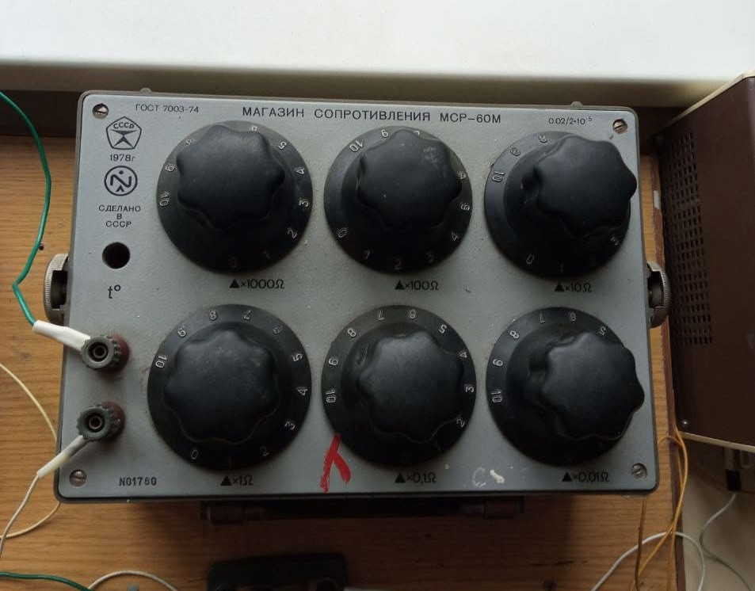
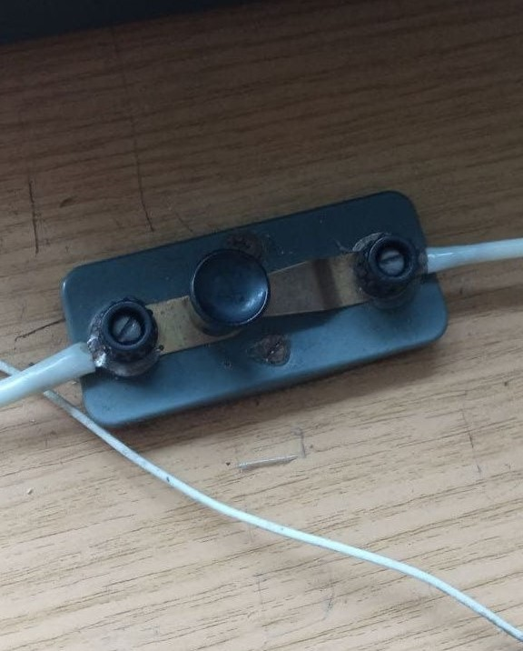

×

Фотогалерея установки

Так выглядит вся установка, в нее входят следующие элементы:
Мост Уитстона, Линейка железная, на 90 см, Магазин сопротивлений, ключ, мультирезистор

Мультирезистор: На нем можно выставить последовательное и параллельное соединение
одного, двух или трех резисторов

Мост Уитстона для измерения сопротивления. Именно на нем и происходит определение равности
как только стрелка покажет 0 - можем записывать сопротивление, которое будет настраиваться на магазине
сопротивлений

Магазин сопротивлений, позволяет выстравать нужное нам сопротивление для получение
нуля на показателе моста Уитстона. Диапазон такого магазина составляет 0,01 - 10 000 Ом (погрешность в 0,005 Ом)

Ключ - маленькая, но очень необходимая часть установки. При замыкании ключа ток идет на резисторы и мы
можем отмерить сопротивление
Так выглядит вся установка, в нее входят следующие элементы:
Мост Уитстона, Линейка железная, на 90 см, Магазин сопротивлений, ключ, мультирезистор
Мультирезистор: На нем можно выставить последовательное и параллельное соединение
одного, двух или трех резисторов
Мост Уитстона для измерения сопротивления. Именно на нем и происходит определение равности
как только стрелка покажет 0 - можем записывать сопротивление, которое будет настраиваться на магазине
сопротивлений
Магазин сопротивлений. Данное оборудование позволяет выстравать нужное нам сопротивление для получение
нулевого положения на показателе моста Уитстона. Диапазон такого магазина составляет 0,01 - 10 000 Ом.
Что позволяет нам максимально точно вычислять сопротивление с погрешностью в 0,005 Ом
Ключ - маленькая, но очень необходимая часть установки. При замыкании ключа ток идет на резисторы и мы
можем отмерить сопротивление
- Магазин сопротивлений
- Мост Уитстона
- Железная линейка
- Резисторы
- Ключ